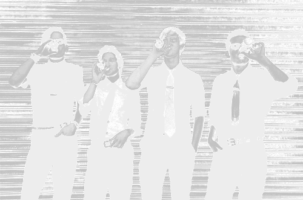
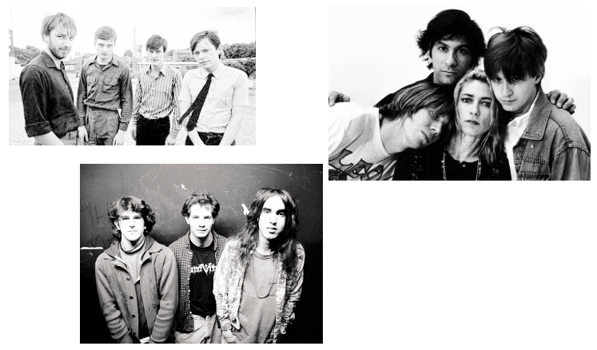

I N T E R P O L

INTEGRANTES
Te presento a los integrantes de la banda
Albumnes
Te presento la discografía de la banda (Da click para escuchar en Spotify)
Un poco de historia
La banda neyorkina tuvo sus inicios en el año de 1998 hasta la actualidad, la banda se formo en una universidad de New York, siendo la formacion principal Banks (voz, guitarra y letras), Daniel Kessler (guitarra), Greg Drudy (batería) y Carlos Dengler (bajo, teclados), posteriormente Sam Fogarino sustituyo a Greg en la bateria, por otro lado Carlos Denger abandono la banda en 2010

Inspiraciones
Interpol tiene un estilo de rock oscuro, de raíces claramente ochenteras, que recuerda el post punk de los ingleses Joy Division (aunque han desmentido tenerlos en cuenta como influencia) y Bauhaus. También se acercan a la vertiente más sucia del rock independiente estadounidense de Sonic Youth, Dinosaur Jr y por parte del cantante Paul Banks, de Nirvana. También podemos señalar la influencia de los Pixies en los neoyorkinos, principalmente en la manera de afrontar la creación musical.

Actualidad
En la actualidad Interpol es una banda activa que dando presentaciones en diferentes eventos de musica a lo largo del mundo siendo su gira mas reciente en el 2022 promocionando su album TOSOMB .
Mejores canciones
Mejores canciones de acuerdo a sus reproducciones:
- “A Time to Be So Small” From Antics (2004)
- “Slow Hands” From Antics (2004)
- “Leif Erikson” From Turn on the Bright Lights (2002)
- “Who Do You Think?” From Our Love to Admire (2007)
- “Evil” From Antics (2004)
- “Obstacle 1” From Turn on the Bright Lights (2002)
- “The Heinrich Maneuver” From Our Love to Admire (2007)
- “Specialist” From Interpol EP (2002)
- “Untitled” From Turn on the Bright Lights (2002)
- “PDA” From Turn on the Bright Lights (2002)